Ecco il cibo "salutare" PEGGIORE ( il Numero uno ) + altri 2 FALSI "cibi salutari", che scommetto consumi inconsapevolmente, che stanno distruggendo la tua salute, il tuo metabolismo e il tuo DNA ( smetti di mangiare questi... )
Questi cibi, spacciati come "salutari" dagli esperti, dai media, e persino dal governo stanno silenziosamente danneggiando la tua famiglia causando diabete, malattie cardiache, cancro, artrite, aumento di grasso corporeo e accelerano l'invecchiamento...Continua a leggere perchè stai per scoprire il perchè tu dovresti mangiare di PIU' i cibi come il burro, la panna, il formaggio, l'olio di cocco, l'avodado e le bistecche. Se questo ti sembra strano, troverai tutte le informazioni che ti servono in questo articolo...
di Mike Geary, Nutrizionista Specialista Certificato, Personal Trainer Certificato
Autore – La Verità sugli Addominali Scolpiti - La Cucina Brucia grassi - i 101 cibi che COMBATTONO l'invecchiamento

Avrai sentito spesso in televisione notizie su come lo zucchero faccia male o sul fatto che il grano e il glutine non facciano bene alla salute, ma sei davvero in grado di sapere come questi cibi interagiscono con il tuo corpo e cosa provocano?
Molte persone non comprendono tali ragioni... il fatto è che alcuni dei cibi che ho elencato nel titolo dell'articolo non solamente possono distruggere i tuoi ormoni ed il tuo metabolismo, ma possono anche causarti malattie cardiache, diabete di tipo 2, l'Alzheimer e persino il cancro.
Inoltre, come vedrai in seguito, c'è un alimento di origine vegetale che tu probabilmente mangi molto spesso al ristorante (scommetto ALMENO una volta la settima ) ed è provato che questo cibo CAUSA attacchi di cuore. Capirai quello che intendo leggendo questo articolo.
Ti mostrerò esattamente anche tutto quello che devi sapere per mangiare in modo da ACCELERARE il tuo metabolismo, bilanciare i tuoi ormoni, PREVENIRE attacchi di cuore, EVITARE che si sviluppi il cancro nel tuo corpo ed assicurarti che non avrai MAI il diabete di tipo 2, questo indipendentemente dai tuoi “cattivi geni”.
Quindi andiamo subito al punto...
3 motivi per cui non dovresti MAI mangiare il grano -- SI, anche il "grano integrale"
Ci sono 3 ragioni principali per cui il grano è un cibo dannoso per il tuo corpo e causa molti più danni che benefici.
Motivo Nr. 1 – Il grano causa la degenerazione della glicemia nel sangue e provoca la glicazione nelle tue cellule, favorisce i processi di invecchiamento, l'aumento di peso & aumenta il rischio di diabete.
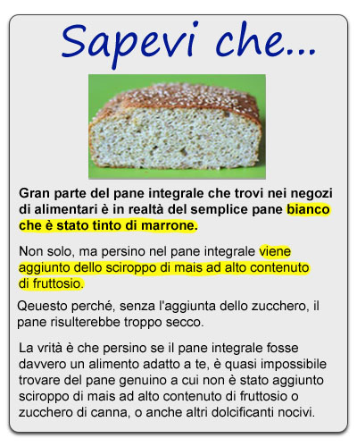
Prima che io ti dica come il grano può, di fatto, accelerare l'invecchiamento nel tuo corpo, cerchiamo di chiarire il funzionamento di alcuni semplici processi biochimici nel tuo corpo...
Questo riguarda la “glicazione” nel tuo corpo, e come agiscono alcune sostanze chiamate Prodotti Finali della Glicazione Avanzata (AGEs). Questi piccoli ma dannosi composti chiamati AGEs accelerano i processi di invecchiamento, danneggiano nel tempo i tuoi organi, compromettono le articolazioni e chiaramente provocano anche le rughe sulla pelle.
Detto questo, qual'è uno dei principali fattori che incrementa la produzione di questi AGEs all'interno del tuo corpo? Questo potrebbe sorprenderti: gli alti livelli di zucchero nel sangue, a lungo andare, aumentano enormemente gli AGEs, che a loro volta accelerano l'invecchiamento. Questa è la ragione per cui molte volte i diabetici di tipo 2 non sembrano invecchiare bene, e dimostrano un'età maggiore di quella che hanno. Ma questo effetto di accelerare l'invecchiamento NON è limitato solo ai diabetici.
Quindi torniamo a come la farina di grano, anche “integrale” è coinvolta in questo problema...
Ecco qui un fatto poco conosciuto, spesso coperto da una massiccia campagna di marketing, ad opera dei giganti della catene alimentari, che per qualche ragione vogliono che tu creda che il grano sia salutare per te...Il fatto è che il grano contiene un tipo di carboidrato molto inusuale (che non si trova in altri cibi), chiamato Amilopectina-A. Alcuni test di laboratorio hanno rilevato che assumere tale carboidrato comporti un di picco negli zuccheri nel sangue MAGGIORE persino dello zucchero bianco puro.
Infatti, come hanno dimostrato alcuni test documentati, l'Amilopectina-A (il carboidrato presente nel grano) incrementa il livello di zuccheri nel tuo sangue PIU' di qualsiasi altra fonte di carboidrati esistente.
Questo significa che i cibi prodotti con farina di grano, come pasta, pane, fette biscottate, brioches ed altri prodotti da forno, spesso causano un MAGGIOR livello di zuccheri nel sangue di quasi qualsiasi altra fonte di carboidrati. Se non mi credi, ecco qualcosa che dovresti sapere...Ho effettuato personalmente su me stesso dei test sul livello di zuccheri nel sangue, usando un glucometro circa 45 minuti dopo aver mangiato 2 fette di pane. Ho confrontato i risultati ottenuti con quelli riscontrati mangiando invece una tazza piena di avena, con un quantitativo di carboidrati equivalenti alle 2 fette di pane.
Ecco i risultati della glicemia nel sangue di grano vs farina d'avena:
2 fette di pane integrale da toast:
45 minuti dopo l'assunzione: il livello di zucchero è passato da 86 ( a digiuno) a 155
1 ciotola di farina d'avena (un quantitativo equivalente in carboidrati con le due fette di pane)
45 minuti dopo l'assunzione: il livello di zucchero è passato da 86 ( a digiuno) a 112
Come saprai, maggiore è la quantità dei livelli dello zucchero nel sangue nel tempo, maggiori sono gli AGEs che si formano nel tuo corpo, che ti fanno invecchiare più RAPIDAMENTE. Chiaramente, il picco negli zuccheri nel sangue provocato dal grano è molto MAGGIORE di quello dato dall'avena, e, se tu non lo sapessi, 155 è un valore molto alto. Se mangi il grano frequentemente sicuramente otterrai una accelerazione nei processi di invecchiamento... e molte persone mangiano grano senza nemmeno pensarci durante quasi tutti i loro pasti. Le cose stanno così!
Se non bastasse tutto questo, considera che questi picchi di zucchero nel sangue causati dal grano, fanno sì che il tuo corpo produca più insulina che a sua volta fa accumulare grasso corporeo... Questo non è divertente!
Questi elevati picchi di zucchero nel sangue, provocati dal grano, causano nel tempo danni al tuo sistema di regolazione dello zucchero nel sangue, danneggiano il pancreas, creano resistenza all'insulina, e possono anche causare il diabete di tipo 2. Penso che siano motivazioni più che convincenti per decidere di evitare questo tipo di grano integrale, definito “salutare” dai media e dalla pubblicità.
Motivo Nr. 2 – Glutine ed altri composti dannosi per l'intestino.
L'argomento glutine è molto discusso tra i media ultimamente... Ma molti hanno il dubbio se il glutine costituisca o meno un rischio reale, per una persona normale che non soffre di celiachia.
La verità è che, anche se tu non sei ufficialmente “intollerante al glutine” nè “ sensibile al glutine”, ci sono centinaia di pubblicazioni che indicano il glutine come causa di infiammazioni al tuo sistema digerente, e può persino provocare “permeabilità” nel tuo intestino, che può compromettere la salute e comportare la cosiddetta sindrome dell'intestino permeabile, come pure altri problemi digestivi e malattie autoimmuni.
Gli scienziati ipotizzano che uno dei motivi per cui il glutine sta causando tutti questi problemi all'apparato digerente sia l'eccessiva ibridazione del grano avvenuta nel corso degli ultimi 50 anni. Tale ibridazione ha creato nuove molecole di glutine modificate, che sono estrenee al nostro apparato digerente - se confrontate con quelle presenti nel grano che è stato utilizzato per migliaia di anni dai nostri antenati - e molto diverse persino da quelle che i nostri nonni consumavano 50 anni fa.
Motivo Nr.3 – Anti-nutrienti presenti nel grano impediscono l'assorbimento di minerali nel corpo.
La terza ragione per cui il grano è molto dannoso per te è perchè contiene i cosiddetti “antinutrienti”, che sono componenti naturalmente presenti nella pianta del grano, ma che possono causare effetti indesiderati nelle persone che ne fanno un uso troppo frequente. Uno di questi antinutrienti si chiama “acido fitico” contenuto nei fitati, che, se si mangia il grano troppo spesso, blocca l'assorbimento nel tuo corpo di certi minerali tra i quali lo zinco, il ferro, il manganese e il calcio.
Ancora, molte persone mangiano grano quasi ad ogni pasto (cereali al mattino e pane e/o pasta durante il pranzo e a cena). Questo, nel corso del tempo, può causare carenza di minerali e provocare molti altri problemi di salute.
Il grano, oltre ai fitati contiene anche altri antinutrienti e altre sostanze che impediscono l'assorbimento di minerali, come la lecitina. La lecitina è un altro costituente del grano che causa irritazione all'intestino. Ecco un'altra importante ragione per ridurre o eliminare il grano dalla tua dieta.
Nel grano non c'è assolutamente nulla di “indispensabile” per l'alimentazione umana... Semplicemente arreca più danno che beneficio. Punto. Molte persone spesso mi chiedono... “Per quello che riguarda le FIBRE” nel grano? Pensavo che il grano venisse considerato un alimento salutare, per via delle fibre.”
Mi dispiace, puoi ottenere TUTTE le fibre di cui hai bisogno dalla frutta, dalla verdura e dalle noci, senza i danni all'apparato digerente né i problemi di zucchero nel sangue causati dal grano
3 motivi per cui non dovresti MAI usare gli OLI vegetali...
Se tra gli ingredienti di un prodotto alimentare trovi la dicitura “olio vegetale” o “grassi vegetali”, potresti anche pensare che sia un alimento salutare. Ma NON è così... Come probabilmente saprai, questi oli e grassi derivano da una qualsiasi combinazione di olio di mais, di soia, di colza, di girasole, di cartamo e/o di cotone, e TUTTI questi oli sono pessimi per la tua salute.
Infatti, sono addirittura mortali, e non sto esagerando. Ecco perché...
Motivo Nr.1 – Gli oli vegetali in genere contengo i cosiddetti grassi trans, molto PERICOLOSI per la salute, anche se non idrogenati.
Conoscendo questi fatti, sono sicuro che tu sei già al corrente che è di gran lunga preferibile evitare i cibi che contengono grassi vegetali idrogenati. Lo avrai già sentito milioni di volte.
Tuttavia, quello che probabilmente tu NON sai, è che persino i grassi vegetali non idrogenati contengono anch'essi alcuni grassi modificati dovuti all'alta temperatura, ai solventi ed alla pressione cui sono sottoposti durante il processo di raffinazione (tutti gli oli vegetali sono raffinati). Questo, sì, include anche i cosiddetti “olii spremuti con procedimenti meccanici”.
Tutti questi processi ad alta temperatura, alta pressione, e l'uso dei solventi a base di esano, comporta la trasformazione del contenuto di grassi polinsanturi degli oli vegetali, trasformandoli in grassi trans o peggio, in quelli di cui parleremo tra poco, ossia i cosiddetti “megatrans”.
Secondo il dott. Mary Enig, Medico e Biochimico Nutrizionista, “Anche se il governo canadese stabilisce che il contenuto di grassi trans nell'olio di canola deve restare entro il minimo dello 0,2 % per porzione, ricerche effettuate dall'università della Florida di Gainesville, hanno riscontrato che i livelli di grassi trans arrivano fino al 4,6 % nell'olio di canola liquido in commercio.".
Questa è la spazzatura, che il governo e i giganti della distribuzione alimentare ti stanno proponendo come “oli salutari”. Non farti fregare.
Motivo Nr.2 – Gli oli vegetali contengono grassi ossidati chiamati “grassi mutati”che sono peggiori dei grassi trans e CAUSANO attacchi di cuore.
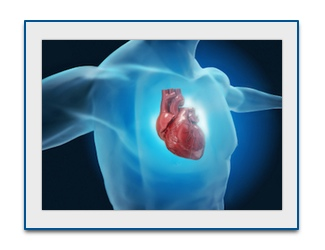Tutti gli oli vegetali contengono grassi ossidati causati dal processo di raffinazione e dalle reazioni chimiche con il contenuto di grassi polinsaturi degli oli stessi. Una dottoressa in medicina, autrice esperta di nutrizione, Catherine Shanahan, chiama questi grassi negli oli vegetali “Mega Trans”, perchè la loro composizione chimica è simile a quella dei grassi Trans, ma persino PEGGIORE.
I MegaTrans contenuti negli oli vegetali sono presenti in quasi TUTTE le preparazioni alimentari confezionate, così come anche probabilmente TUTTE le friggitrici dei ristoranti.
E' stato dimostrato che le patatine fritte danneggiano immediatamente le arterie, subito dopo essere state ingerite.
I radicali liberi, che si formano durante la raffinazione degli oli vegetali, creano questi grassi “mutanti”, che danneggiano le membrane delle cellule ed i cromosomi, e causano gravi infiammazioni nel tuo corpo..
I radicali liberi degli oli vegetali inoltre danneggiano il sistema vascolare, cosa che può avere come conseguenza attacchi di cuore. Per favore, sii consapevole che non stiamo parlando di un rischio remoto, che potrebbe verificarsi solo nel caso tu ti alimenti di oli vegetali quotidianamente. Ci sono studi che dimostrano una immediata disfunzione nelle arterie, detta disfunzione endoteliale.
Il medico Catherine Shanahan, cita nel suo libro Deep Nutrition (Nutrizione Profonda), uno studio dalla Nuova Zelanda, che mostra come i soggetti che hanno mangiato patatine fritte in friggitrice, hanno subìto un danneggiamento immediato alla funzionalità endoteliale delle loro arterie, passando da un valore normale di dilatazione del 7% ad una dilatazione quasi NULLA (solamente l'1%) subito DOPO aver mangiato patatine fritte. Questa è una cosa che può causare attacchi di cuore.
Se pensi che io stia esagerando, ripensaci... La dottoressa Shanahan ha anche intervistato centinaia di pazienti che sono stati ricoverati in ospedale in seguito ad un attacco di cuore. Ha così scoperto che ogni singolo paziente che aveva appena avuto un attacco di cuore, aveva consumato cibo contenente oli vegetali nel pasto precedente all'attacco. Spaventoso, eh!
Pensaci la prossima volta che vorrai mangiare delle patatine fritte! E' DAVVERO così grave! Sostituisci le patatine fritte con della verdura cotta, con della frutta o con un'insalata. Questo potrebbe fare la differenza tra il morire domani o godersi molti più anni in salute su questo meraviglioso pianeta.
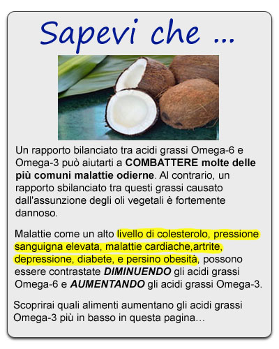
Motivo Nr. 3 – Gli oli vegetali causano un grave squilibrio nel rapporto tra grassi Omega-6 e Omega-3.
Una delle ragioni PRINCIPALI per cui gli oli vegetali ti stanno uccidendo è che sono perlopiù costituiti di grassi omega-6, che causano infiammazioni, mentre contengono un quantitativo basso di grassi Omega-3, che sono anti-infiammatori.
La letteratura scientifica sembra indicare come il rapporto ottimale tra Omega-6 ed Omega-3 dovrebbe essere di 2 a 1 o addirittura di 1 a 1. Invece, nella maggior parte degli oli vegetali questo rapporto è sbilanciato fino a 20 a 1 o addirittura 30 a 1, favorendo così i processi infiammatori dati dall'eccesso di Omega-6
E ancora peggio, questi grassi Omega-6 NON sono quel tipo di grassi innocenti che troviamo nella frutta secca, ma sono del tipo di grassi alterati, i Megatrans “mutanti”, che aggrediscono i tessuti del tuo corpo.
Questo squilibrio tra i grassi di tipo Omega, può essere ANCHE una ulteriore ragione per la quale gli oli vegetali provocano malattie cardiache, cancro, obesità, oltre a molte altre malattie degenerative che ACCORCIANO la tua vita in modo significativo, se non elimini questo tipo di oli vegetali dalla tua dieta IL PRIMA POSSIBILE.
La SOLUZIONE a questi gravi problemi con gli oli vegetali è semplice e consiste nell'usare oli salutari, quali l'olio di cocco, l'olio extravergine di oliva, l'olio di macadamia e l'olio di avocado estratti meccanicamente e a freddo, ed è molto indicato anche il burro ricavato dal latte di animali allevati al pascolo ad erba. Tutti questi alimenti sono MOLTO più salutari degli oli vegetali di cui abbiamo parlato, e non causano nessuno dei problemi che abbiamo descritto più sopra in questo articolo.
La VERITA' sullo zucchero. E perchè non puoi semplicemente “bruciare” lo zucchero.
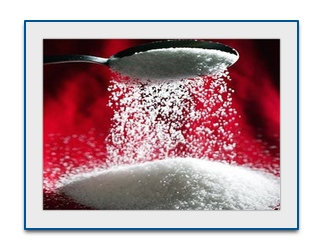Hai sentito milioni di volte, dagli esperti di salute, su internet e sulla stampa, che lo zucchero è dannoso per la tua salute, ma probabilmente non sai la vera ragione per cui lo zucchero è così pericoloso.
In realtà, la maggior parte delle persone pensa erroneamente che, se ingeriscono dello zucchero, possono semplicemente fare un po' di esercizio fisico quel giorno o il giorno successivo, così da “bruciarlo”. Sfortunatamente, questo modo di pensare ti condurrà ad una morte prematura.
Non è semplicemente questione di “bruciare lo zucchero”. Si tratta di quello che lo zucchero provoca all'interno delle cellule del tuo corpo, di come intacca i tuoi processi vitali, causando malattie.
Ancora una volta, non sto affatto esagerando, quindi fai molta attenzione.
Se tu sapessi la ragione esatta per la quale lo zucchero è così dannoso per te e cosa provoca la sua ingestione alle cellule del tuo corpo, ti assicuro che ci penseresti due volte prima di mangiare un pezzo di torta, scartare una caramella, bere bevande zuccherate, succhi di frutta dolcificati e gelati, né vorresti farli mangiare ai tuoi bambini.
Ecco qui solo alcune delle ragioni per cui lo zucchero ti sta danneggiando profondamente...
- Come abbiamo detto in precedenza a proposito del grano, anche lo zucchero causa notevoli variazioni nel livello di zuccheri nel tuo sangue. L'eccesso di zucchero nel sangue causa Glicazione nel tuo corpo, che accelera l'invecchiamento dei tuoi organi, della pelle, delle arterie e delle articolazioni..
- Inoltre aumenta i tuoi trigliceridi fino a livelli pericolosi e questo può comportare malattie cardiache.
- Se questo non fosse abbastanza grave, sappi che mangiare zucchero troppo di frequente nel lungo periodo causa diabete di tipo 2, dal momento che si altera la sensibilità all'insulina della funzionalità pancreatica.
- Se mai ti servissero altre ragioni per stare lontano dallo zucchero, dovresti sapere che rallenta anche il funzionamento dei tuoi globuli bianchi, favorendo le infezioni e addirittura facilitando la formazione di cellule CANCEROSE.
Spaventoso vero?
Sicuramente tu già sai che lo zucchero ti fa ingrassare, e che ti fornisce calorie in eccesso senza apportare alcun tipo di nutrienti benefici.
Per essere chiari, quando parliamo dei danni che lo zucchero può comportare nel tuo corpo, NON stiamo parlando di una piccola quantità, come ad esempio 5 grammi dati dal cucchiaino di miele che metti nel tuo the... Una piccola quantità di zuccheri di origine naturale non costituisce un problema.
Il danno REALE si verifica quando mangi un pezzo di torta e quindi ingerisci 40 - 50 grammi di zucchero in una volta sola, oppure se mangi un pacchetto di caramelle che contiene 35 grammi o più di zucchero, o una bibita dolcificata che ti fornisce 45 grammi di zucchero, o anche molto di più.
Persino quelle bevande che sono considerate “salutari” come i frappè, contengono una quantità enorme di zuccheri, oltre 80 grammi, a causa dei dolcificanti che contengono. Ora che sai perché lo zucchero, il grano e gli oli vegetali stanno togliendo la salute a te e alla tua famiglia. Forse ci penserai due volte prima di mangiare cereali, pane, dolciumi, cibo preconfezionato o cibo fritto in olio vegetale.
Ecco qui sotto altri esempi di cibo, che probabilmente mangi abitualmente, cibi che ti stanno facendo ingrassare a tua insaputa, e ti stanno causando il diabete, malattie cardiache e persino il cancro...
Ecco i cosiddetti “Cibi salutari” che stanno favorendo l'accumulo di grassi nel tuo corpo?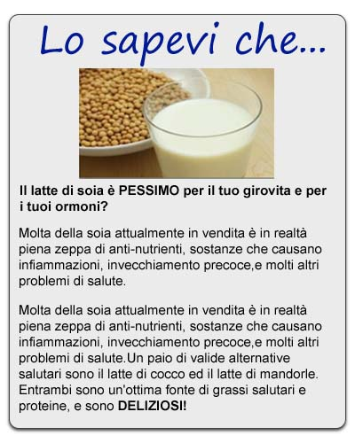
Non so quante volte dopo essere stato ingaggiato per delle consulenze nutrizionali, entrando nelle cucine dei miei clienti sono rimasto scioccato da quello che ho visto...
Quasi tutte le volte, ho trovato negli scomparti della cucina e dei frigoriferi del cibo che loro ritenevano “salutare” (o sono stati indotti a crederlo da etichette alimentari ingannevoli) cibi che in realtà erano trappole accumulatrici di grasso sotto mentite spoglie.
Non è raro trovare nelle cucine cibi come:
- pane integrale
- cereali integrali
- crackers integrali (altro grano dannoso che ti sta danneggiando)
- latte di soya
- tofu o "hamburgher vegetali" (la soia non fermentata può creare danno ai tuoi ormoni)
- succo d'arancia (dolcificato con troppo fruttosio che fa aumentare i tuoi trigliceridi)
- succo di mela
- latte scremato o latte pastorizzato
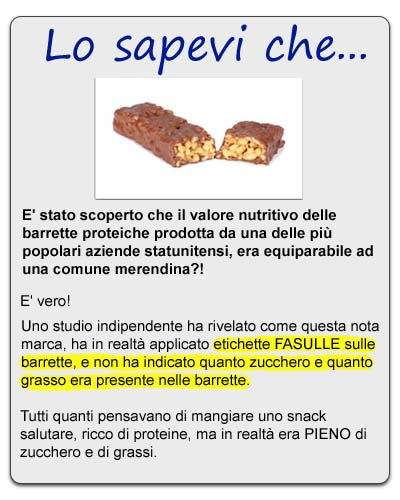 - margarina (che contiene i pericolosi grassi Trans o persino i MegaTrans)
- pasti "dietetici" preconfezionati
- bevande per gli sportivi ( che sono piene di zucchero )
- barrette proteiche (la maggior parte sono dolciumi camuffati da barrette salutari)
- sostitutivi del pasto eccessivamente elaborati (che contengono più spazzatura che ingredienti salutari)
- torte di riso (che creano elevati picchi di zuccheri nel sangue)
- pasta (altro grano, per farti invecchiare più in fretta)
- gelati dietetici o dessert dietetici
- le cosiddette bevande “energetiche”
- cibi a basso contenuto di grassi (generalmente il grasso viene sostituito con dello zucchero)
- cibo processato con pochi carboidrati
- olio di soia, olio di mais, olio di canola
- etc, etc
Ho riscontrato questa tendenza più e più volte, quasi in tutti i miei clienti, quando per la prima volta ispeziono le dispense delle loro cucine ed i cibi che comprano ritenendoli salutari.
Quello che loro non comprendono è che sono proprio quei cibi a sabotare il loro sforzi per dimagrire, aumentando la loro fame, scombussolando il loro ormoni e CAUSANDO terribili malattie come il diabete, varie problematiche al cuore e cancro.
La tua soluzione definitiva per mangiare bene, con una dieta salutare che promuove la perdita di peso senza rinunciare al gusto e senza morire di fame e senza contare le calorie
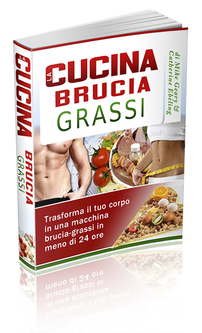Ti mostrerò che una perdita definitiva di peso e alimentarsi in modo da prevenire malattie come il diabete, le problematiche cardiache e il cancro, non è necessariamente COMPLICATO.
Di fatto, seguendo i nostri consigli che ti proponiamo nel programma alimentare, sceglierai i cibi GIUSTI, e capirai come questi cibi reagiscono con il tuo corpo. Ti garantirai il giusto apporto calorico SENZA più il bisogno di conteggiare le calorie.
Questo è il motivo per cui ho collaborato con la ricercatrice esperta di nutrizione Catherine Ebeling ed abbiamo redatto insieme questo programma per te:
La cucina brucia grassi
Trasforma il tuo corpo in una macchina brucia grassi in meno di 24 ore.
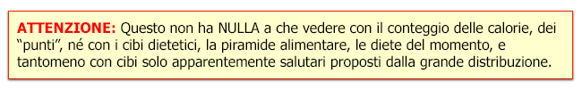
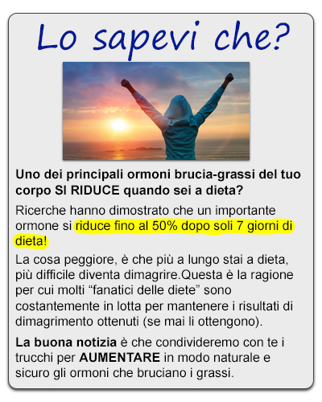All'interno del programma troverai:
- il vero segreto che rende totalmente obsoleto il calcolo delle calorie… questo principio eliminerà automaticamente le tue voglie e controllerà in modo permanente il tuo appetito (io l’ho applicato su me stesso e, grazie a questo semplice trucchetto, non ho una vera "voglia irrefrenabile di cibo" da almeno 6 anni) – pag. 1-2
- la verità sui grassi polinsaturi (omega-6 e omega-3) che molte aziende alimentari non vogliono farti conoscere – pag. 18
- quali barrette proteiche e energetiche sono in realtà barrette di cioccolato mascherate e quali sono invece le barrette che ti fanno bene– pag. 50
- la verità sui grassi saturi e sul colesterolo, e perchè sono essenziali se vuoi essere magro e in salute– pag. 59
- l’inganno che sta dietro al "grano integrale" e perchè i crackers, il pane e i cerali integrali ti fanno immagazzinare più grasso di quello che pensi– pag. 9
- perchè il latte scremato non è così salutare come credi – pag. 29
- l’unico caso in cui la tilapia e il salmone NON sono cibi salutari – pag. 36
- esiste un hamburger sano che brucia il grasso? Assolutamente sì, lo scoprirai a pagina 60
- perchè il latte di soia, il tofu e gli hamburger vegetali non fanno altro che gonfiare i tuoi rotoli di grasso– pag. 41
- le bibite sportive stanno soffocando i tuoi tentativi di bruciare grasso? – pag. 46
- L'unico dolcificante sano…esistono dolcificanti sani senza calorie– pag. 83
- un sorprendente “grasso buono”, presente in alcuni prodotti animali, che ti aiuta davvero a bruciare il grasso e a costruire "nuovi" muscoli– pag. 60
- meglio le uova intere o solo gli albumi? La risposta è molto semplice… – pag. 65
- le bibite dietetiche o light stanno vanificando i tuoi sforzi per perdere peso? – pag. 22
- il latte intero è meglio del latte scremato? La terza opzione è la migliore – pag. 67
- un tipo di grasso saturo che in realtà accelera e aiuta il tuo metabolismo – pag. 112
- l’unico caso in cui il cioccolato può aiutarti a prevenire le tue voglie di dolci– pag. 88
- il tè verde o il tè oolong aumentano davvero il tuo metabolismo e ti aiutano a perdere grasso? ecco la verità – pag. 90
- quale tipo di frutta e verdura è meglio acquistare NON biologica: ecco come fare sempre la scelta migliore – pag. 94
- e TANTISSIMI altri segreti per aiutarti a trasformare la tua dieta in modo permanente, questo costringerà il tuo corpo a bruciare i grassi e si trasformerà in una macchina brucia grassi, efficiente e veloce.
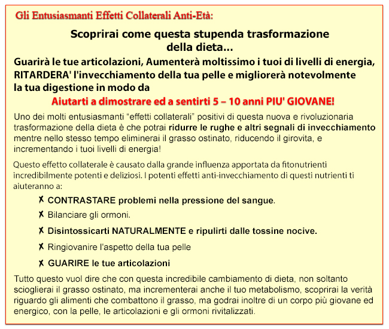
Immagina di svegliarti ogni mattina PIENO energia, di guardarti allo specchio e AMARE quello che vedi...
...Ora immagina di andare nella tua cucina e di sentirti a tuo agio con i cibi e le bevande che sono nel tuo frigorifero e nella tua dispensa, a come non dover fare più fare alcuna fatica per cercare di scegliere cosa è salutare e cosa non lo è, a distinguere cosa ti aiuta a perdere peso e cosa ti fa ingrassare...
Immagina come sarai in forma e come ti sentirai bene, quando SAPRAI che i cibi davvero adatti a te - che aumentano il tuo metabolismo, guariscono le articolazioni, SCIOLGONO il grasso ostinato e combattono l'invecchiamento - sono in realtà molto buoni, pieni di sostanze nutrienti e soddisfano il tuo appetito.
Non solo stai per scoprire la verità sui cibi che trovi nella tua cucina e acquisti nei negozi alimentari, ma stai anche per:
- Scoprire come, alcuni tipi di proteine, di specifici tipi di animali, TI AIUTANO a bruciare grasso e aumentare la massa muscolare, e sono anche ricchi di acidi grassi, benefici per la salute del tuo cuore (scommetto che QUESTO non lo sapevi).
- Idee per pasti deliziosi, nutrienti che ti faranno venire l'acquolina in bocca. Pasti che non soltanto soddisferanno il tuo appetito (FERMANDO in questo modo le voglie incontrollate di cibo) ma che sono anche utili per bruciare il grasso addominale e combattere l'invecchiamento.
- I 3 MIGLIORI tipi di pesci pescati in mare aperto che ti fanno bene (un paio di questi probabilmente non sono quelli che pensi), e per contro, uno specifico tipo di pesce che non dovresti MAI mangiare.
- La verità sulle UOVA – i media non danno spiegazioni per farti capire se dovresti mangiare o meno le uova... Ora capirai come mai dovresti cominciare a mangiarle regolarmente (ma prima devi scoprire il PERCHE')
- Ti piace il formaggio? Stai per scoprire uno dei MIGLIORI blocca-appetito/fame in circolazione... ma è necessario che tu mangi alcuni specifici tipi di formaggio per ottenere questo importante risultato.
- Olio di cocco e grasso addominale? La verità sull'olio di cocco ti sorprenderà!
- I migliori tipi di FRUTTA SECCA per bruciare il grasso – ATTENZIONE: alcuni dei più popolari tipi di frutta secca che si trovano nei negozi NON sono salutari e ti fanno ingrassare. Invece alcuni studi effettuali su altri tipi di frutta secca, hanno DIMOSTRATO come siano utili per ridurre il grasso addominale, bilanciare gli zuccheri nel sangue e molto altro!
- Scopri il “vasodilatatore naturale” e come questo alimento possa drasticamente migliorare il flusso del sangue e il funzionamento del sistema circolatorio, non soltanto aiutando il funzionamento del tuo cuore ma aumentando anche il tuo livello di energia.
- Scopri come questo alimento molto GRASSO in realtà aiuta il tuo corpo a bruciare PIU' grasso – può sembrare molto strano, ma è scientificamente provato. Questo cibo è OTTIMO per il funzionamento del tuo cervello ed è anche un ottima merenda per i bambini anche molto piccoli.
- I MIGLIORI dolcificanti da aggiungere ai tuoi cibi ed alle tue bevande. Sai già che lo zucchero è terribilmente dannoso per la tua linea e per la tua salute, ma sai qual'è invece il miglior dolcificante che puoi usare in alternativa allo zucchero per rendere dolce il tuo caffè, i cereali e i dolci? Sì, tu PUOI assaporare il tuo caffè, potendo trarne anche incredibili effetti salutari! Il caffè è una fonte ricca di sostanze antiossidanti e anti-invecchiamento ma molte persone lo preparano in modo SBAGLIATO!
- Scopri come puoi gustare il cioccolato tutti i giorni! Questo suggerimento non solo ti aiuta a PERDERE peso, ma COMBATTE anche i processi di invecchiamento. Mangialo con gusto ... ma devi prima scoprire qual'è il TIPO di cioccolato adatto.
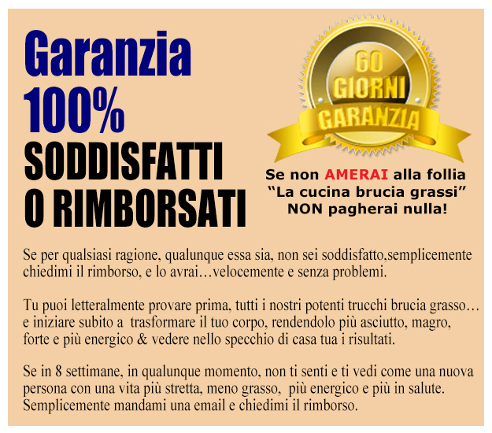
Bonus speciale: capitolo extra:
Le tecniche nutrizionali super-avanzate che ho usato personalmente per diminuire il mio grasso corporeo dal 10.2% al 6.9% in poco più di 3 settimane (23 giorni esatti)
Bene… ti voglio raccontare una cosa…anche se di solito sono in gran forma tutto l’anno, avevo appena terminato di programmare un servizio fotografico e avevo bisogno di perdere un paio di punti % di grasso corporeo, avevo solo poco più di 3 settimane per prepararmi.
Ero già piuttosto magro (avevo intorno al 10% di grasso corporeo all’epoca), ma dovevo perdere l’ultimo terribile residuo di "grasso ostinato", così ho deciso di utilizzare qualche strategia avanzata.
Dopo aver studiato per anni le tecniche più avanzate per perdere il grasso, sapevo esattamente cosa dovevo fare… dovevo solo entrare in azione. Così ho messo insieme tutte le mie tecniche più avanzate e innovative per bruciare il grasso che avevo imparato nel corso degli anni e cominciai a darmi da fare.
Nel capitolo extra del programma “La Cucina Brucia Grassi” ti darò tutti i dettagli e come ho fatto esattamente a passare dal 10.2% di grasso corporeo al 6.9% in soli 23 giorni. Non preoccuparti, non c’è assolutamente nessuna "banalità" in questa sezione, non ti consiglierò nessun piatto generico e noioso e non ti raccomanderò di "mangiare molta frutta e verdura"… Queste sono le solite cose che sanno tutti…
Ti dirò tutta la verità e tutti i dettagli su tutto quello che ho mangiato, l’orario dei pasti, le porzioni di carboidrati/proteine/grassi e l’esatto orario degli allenamenti per massimizzare l’effetto brucia-grasso… troverai tutti i metodi di allenamento avanzati che ho usato, gli specifici esercizi e gli allenamenti necessari per massimizzare la perdita di grasso e la conservazione di una muscolatura snella in un periodo così breve.
Ti dirò persino tutte le tattiche avanzate per utilizzare al meglio cibi specifici come (tè, nutrienti, spezie, etc) che ho usato per accelerare i risultati in quei 23 giorni.
La cosa straordinaria è… che se queste tecniche hanno funzionato per me, e mi hanno fatto perdere il difficile "grasso ostinato", funzioneranno ancora meglio per te che hai un po’ più di grasso da perdere.
Questi metodi dovrebbero essere usati SOLO per 3-4 settimane e SOLO quando sei davvero costretto a perdere grasso e dimagrire VELOCEMENTE, magari per un evento a cui ti stai preparando… un matrimonio, una vacanza in spiaggia, una crociera o un servizio fotografico… insomma, ogni volta hai bisogno si un "esplosione" extra per perdere grasso in poco tempo.
Prendi la tua copia oggi del programma "La Cucina Brucia Grassi", perchè questo capitolo EXTRA avanzato per bruciare il grasso è così efficace e così dettagliato che tra non molto lo venderò separatamente al prezzo di €34.95.
Se ordini oggi stesso riceverai GRATUITAMENTE le tecniche nutrizionali super-avanzate che ho usato personalmente per diminuire il mio grasso corporeo dal 10.2% al 6.9% in poco più di 3 settimane (23 giorni esatti)

ATTENDI ! Ti sei qualificato per lo sconto
del 60% in pre-vendita...
(inserimento sconto...)


Sono certo che AMERAI questi suggerimenti nutrizionali unici e le idee che otterrai grazie a questo programma... Puoi dire addio al desiderio incontrollato di cibo, per sempre, e iniziare a mangiare nel modo giusto per trasformare il tuo corpo in una macchina brucia grassi, tutto l'anno, 24 ore su 24.
Mangiando i cibi proposti in questo programma, eviterai la formazione del cancro nel tuo corpo, ridurrai quasi a zero il rischio di sviluppare malattie cardiache mortali, e manterrai il colesterolo e la pressione sanguigna a livelli ottimali.!
Cordialmente,
di Mike Geary, Nutrizionista Specialista Certificato, Personal Trainer Certificato
Autore – La Verità sugli Addominali Scolpiti - La Cucina Brucia grassi - i 101 cibi che COMBATTONO l'invecchiamento